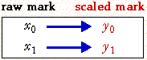
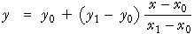
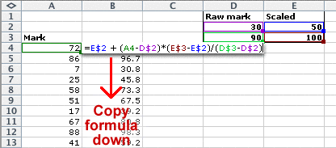
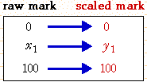
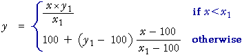
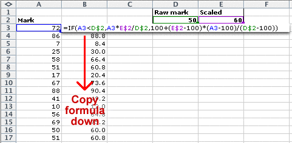

Linear scaling in Excel
A linear scaling of marks is usually best specified by giving two raw marks and the scaled marks that we want to allocate to them.

A linear scaling then transforms any mark, x, into a scaled mark y with the equation:

This equation can be used as a formula in an Excel spreadsheet to scale a complete set of marks. For example, the spreadsheet below changes a raw mark of 30 to 50 and a raw mark of 90 to 100.

Piecewise linear scaling in Excel
Piecewise linear scaling is a little more complicated, but the formula is related to that above. For marks out of 100, we specify the required scaled mark for one raw mark. Since marks of 0 and 100 are unchanged, we have:

The first two rows specify the linear scaling for values, x, that are below x1 and the last two rows specify the linear scaling for values over x1. Simplifying the earlier equations, we therefore have the transformation...

In Excel, this can be implemented with a formula such as that below.
